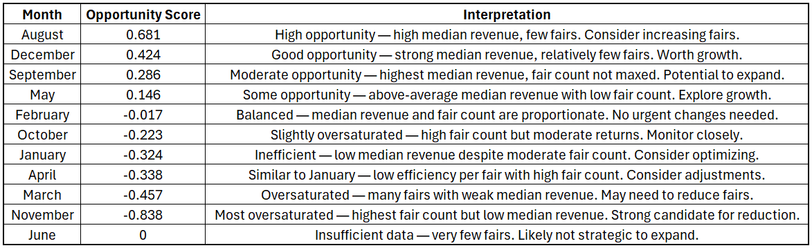

GNBF Business & Data Analysis
Project Overview
In this project, I worked closely with Good News Book Fair (GNBF), a 10-year-old company whose mission is to distribute Catholic-vetted literature to schools and communities across the United States. As a fast-growing and successful organization, GNBF faced challenges common to rapidly scaling businesses—namely, a lack of centralized, organized data and limited capacity to perform deep analytical reviews of their financial, geographic, and operational performance.
I took on the role of data analyst to collect, compile, and clean data from several sources including their internal spreadsheets, ShipStation, Clover, Thrive Shopventory, and other vendor platforms. I then conducted a comprehensive analysis using RStudio and Excel to reveal operational bottlenecks, assess market coverage, identify inefficiencies, and provide data-driven recommendations for strategic growth.
Background
GNBF operates book fairs across the country, partnering with schools to offer literature aligned with Catholic values. While their impact and revenue had grown substantially, the lack of organized data across systems meant they were missing critical insights into which regions were most successful, how product categories performed, and how to streamline operations for future expansion.
The data I worked with spanned multiple domains—financial transactions, inventory flow, demographic and geographic patterns, customer type, and more. Each dataset came in a different format and structure, requiring careful cleaning, validation, and integration before advanced analysis could take place.
Scenario
GNBF leadership had a clear goal: to become more efficient, profitable, and targeted in their outreach and operations. However, their fragmented data made it difficult to understand core business questions such as:
- Where are our strongest and weakest sales regions?
- Which product categories or events generate the highest ROI?
- What demographic and geographic trends can help us better market future events?
- How can we scale without losing control of logistics and inventory?
By integrating and analyzing data across all operational fronts, I provided answers to these questions and uncovered new patterns that GNBF hadn’t previously been able to see.
Objective
The primary objective of this analysis was to centralize and analyze the full range of GNBF's operational and financial data in order to:
- Evaluate current business performance at both national and regional levels
- Identify inefficiencies in inventory, event planning, and product selection
- Highlight key markets and demographics for targeted outreach
- Deliver visual, data-backed insights to support future scaling decisions
Ultimately, the analysis was used to inform GNBF’s leadership team on how to optimize their current operations and strategically plan for sustainable growth.
Results Summary
Revenue Efficiency Analysis
Analysis of historical data revealed that August and December presented the highest opportunity scores, indicating that these months yielded disproportionately high median revenue per fair despite hosting fewer events. This suggests strong potential for reallocating or increasing resources during these months to improve overall efficiency and return on investment.


Book Fair Projections & Trends
Projections for the next five years suggest continued business growth, with both fair count and revenue expected to increase annually. A linear regression analysis showed an average increase of $2,483 in total annual revenue for every additional fair held in a year.
Extrapolating from the 10-year historical growth rate, the number of fairs is projected to rise by 72%, while overall revenue is expected to grow by 48%. These projections offer valuable insight into future scaling, helping inform planning around staffing, inventory, and budgeting needs as the company continues to expand.

Geographic Insights
Analysis of total revenue by state revealed that 91% of all revenue was generated by just the top five states, with Florida leading by a substantial margin. The pie chart below highlights this concentration, with the top five states displayed individually and all other states grouped together.
This graphic suggests GNBF should prioritize strategic expansion into underrepresented regions by leveraging proven strategies, building local partnerships, and targeting high-potential markets to diversify revenue and reduce regional dependency.